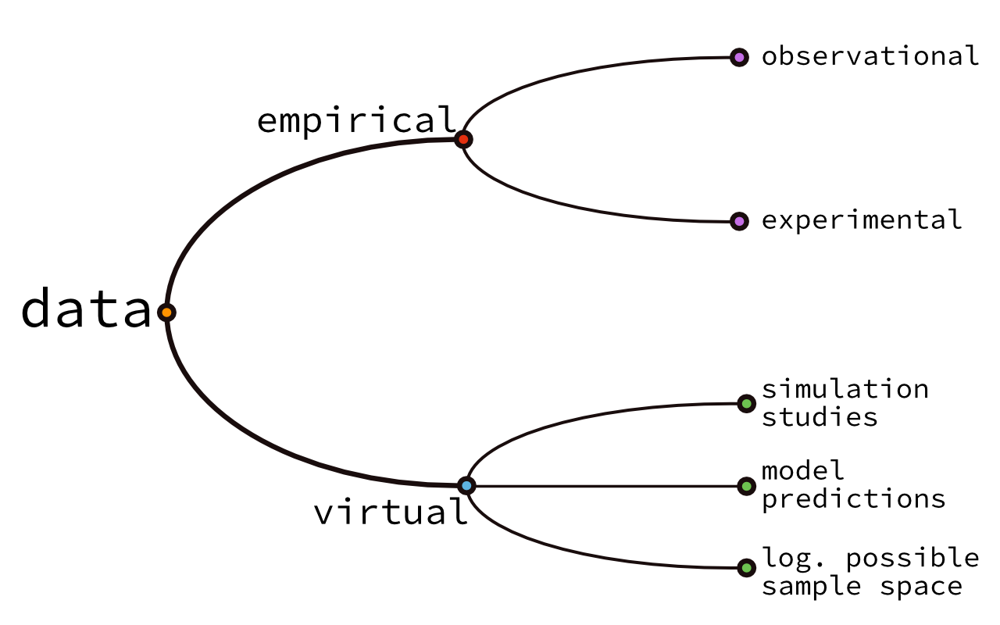

Chapter 2 数据
## 什么是数据
有人说我们生活在数据时代。但数据到底是什么？纯粹主义者说：“数据的复数形式”，并补充说数据只是一个观察结果。但当我们说“数据”时，我们通常指的不仅仅是一堆观察结果。琼斯早餐吃了苹果和香蕉这一观察结果，也许很有趣，但并不是我们通常所称的“数据”。
韦氏词典提供了以下定义：
作为推理、讨论或计算基础的事实信息（如测量或统计数据）。 Factual information (such as measurements or statistics) used as a basis for reasoning, discussion, or calculation.
这是一种目的论的定义，因为它涉及到一个目的：数据是作为“推理、讨论或计算基础使用的东西”。所以，我们所说的“数据”的含义在很大程度上取决于我们打算用它来做什么。这个定义的另一个重要方面是，我们通常认为数据以某种方式或另一种方式被系统地结构化。即使当我们谈论“原始数据”时，我们也希望有一些结构（也许是标签、类别等），以区别于无法解释的噪音。总之，我们可以说数据是以系统方式存储的信息的表示，用于推断、论证或决策。
2.1 不同种类数据

认为数据总是基于对世界的观察而获得的信息是容易但错误的。这种错误的想法容易产生是因为经验数据，即从经验观察中获得的数据，是最常见的数据形式（可以说，它对决策和论证最为相关）。但这种想法是错误的，因为我们同样可以研究虚拟数据。例如，对于数据分析师来说，感兴趣的虚拟数据可以是从计算机模拟研究中获得的数据，例如，从一个旨在阐明合作互动性质的多智能体模拟的十亿次运行中获得的数据。使用与实验数据相同的工具分析这样的数据是有意义的。例如，我们可能会发现在模拟运行中的某些参数组合（在统计上）最有利于产生我们的代理人之间的合作行为。虚拟数据的另一个例子是作为模型预测的数据，我们可以使用这些数据来测试该模型的好坏，即所谓的模型批评。最后，我们还应该在这个列表中包括逻辑上可能的样本数据，因为这对于统计推断的核心思想（尤其是p值，参见第16节）非常重要。逻辑上可能的样本数据是那些既没有被观察到也没有被模型预测的数据，而是一些在逻辑上可能观察到的东西，即使在现实中几乎不会发生，或者不会被任何严肃的模型所预测。
最常见的数据形式，关于实际世界的经验数据，有两种主要变体。观察数据是通过（被动地）观察和记录获得的，即使我们对它不感兴趣，它也会发生。观察数据的示例包括社会经济变量的集合，如性别、教育、收入、子女人数等。相反，实验数据是在严格的操纵和观察的制度中记录的，即科学实验。一些信息只能在观察研究中记录（年收入），而另一些信息只能通过实验获得（记忆力）。数据获取的两种方法各有利弊。以下是一些较为突出的优缺点：
| 观察性 | 实验性 |
|---|---|
| 生态有效性高 | 可能人为 |
| 更容易获取 | 更难获取 |
| 难以区分相关性和因果关系 | 可能提供有关因果关系与相关性的信息 |
无论我们手头有什么样的数据，数据至少有两个显著的用途：解释和预测。虽然相关，但将这些目的清晰地区分开来是有用的。用于解释的数据分析利用数据来更好地理解数据的来源（世界、计算机模拟、模型等）。用于预测的数据分析试图从迄今收集的数据中提取规律，以便对未来或迄今未观察到的数据进行预测（尽可能准确地）。
2.2 关于变量
用于数据分析的数据，即使是“原始数据”，即在预处理和清理之前的数据，通常都以某种方式进行了结构化或标记。即使我们手头的全部数据是一个数字向量，我们通常也知道这些数字代表什么。例如，我们可能只有一个五元组的数字，但我们通常/理想地知道这些数字代表智商测试的结果。
或者我们可能有一个布尔向量，其中包含每个学生是否通过了考试的信息。但即便如此，我们通常/理想地也会知道姓名与考试结果之间的关联，就像下表所示：
library(tibble)
# 谁通过了考试
exam_results <-
tribble(
~student, ~pass,
"Jax", TRUE,
"Jason", FALSE,
"Jamie", TRUE
)像上面表格中的不同列之间的信息关联至关重要。大多数情况下，我们关心的不止一个观察结果。大多数情况下，我们关心世界中不同可观察到的变量之间的系统关系。例如，我们可能想要查看通过考试的机会与课程教学辅导的出勤比例之间的关系：
# 出勤教程的比例与考试通过/不通过
exam_results <-
tribble(
~student, ~tutorial_proportion, ~pass,
"Jax", 0.0, TRUE,
"Jason", 0.78, FALSE,
"Jamie", 0.39, TRUE
)
exam_results## # A tibble: 3 × 3
## student tutorial_proportion pass
## <chr> <dbl> <lgl>
## 1 Jax 0 TRUE
## 2 Jason 0.78 FALSE
## 3 Jamie 0.39 TRUE这种类型的数据也被称为矩形数据，即适合放入矩形表格中的数据（有关矩形数据结构的更多信息，请参见第4.2节）。在上面的示例中，每一列代表一个感兴趣的变量。一个（数据）变量存储了相同类型的观察结果。
基于它们所代表的观察类型的结构属性，可以区分不同类型的变量。常见类型的变量包括：
- 名义变量：每个观察结果都是一组（有限）明确不同类别的实例，缺乏自然顺序；
- 二元变量：名义变量的特例，只有两个类别；
- 布尔变量：二元变量的特例，两个类别是布尔值“true”和“false”；
- 顺序变量：每个观察结果都是一组（有限）明确不同且自然排序的类别的实例，但是类别之间没有自然的距离含义（即，说A比B“更多”是有意义的，但说A是B的三倍“更多”是没有意义的）；
- 度量变量：每个观察结果与实数的子集同构，并且是区间标度的（即，说A是B的三倍“更多”是有意义的）；
在实验数据中，我们还区分因变量和自变量。因变量是实验中我们不控制或不操纵的变量，但我们感兴趣记录的变量（例如，患者是否在一周内从疾病中康复）。因变量也被称为待解释变量。自变量是实验中我们操纵的变量（例如，要给予哪种药物），通常是希望在因变量上看到特定效果的。自变量也被称为解释变量。